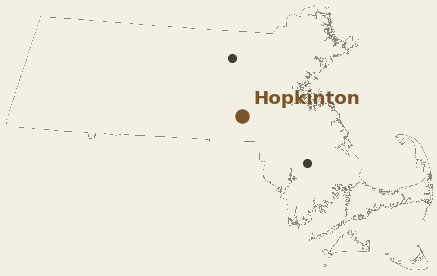
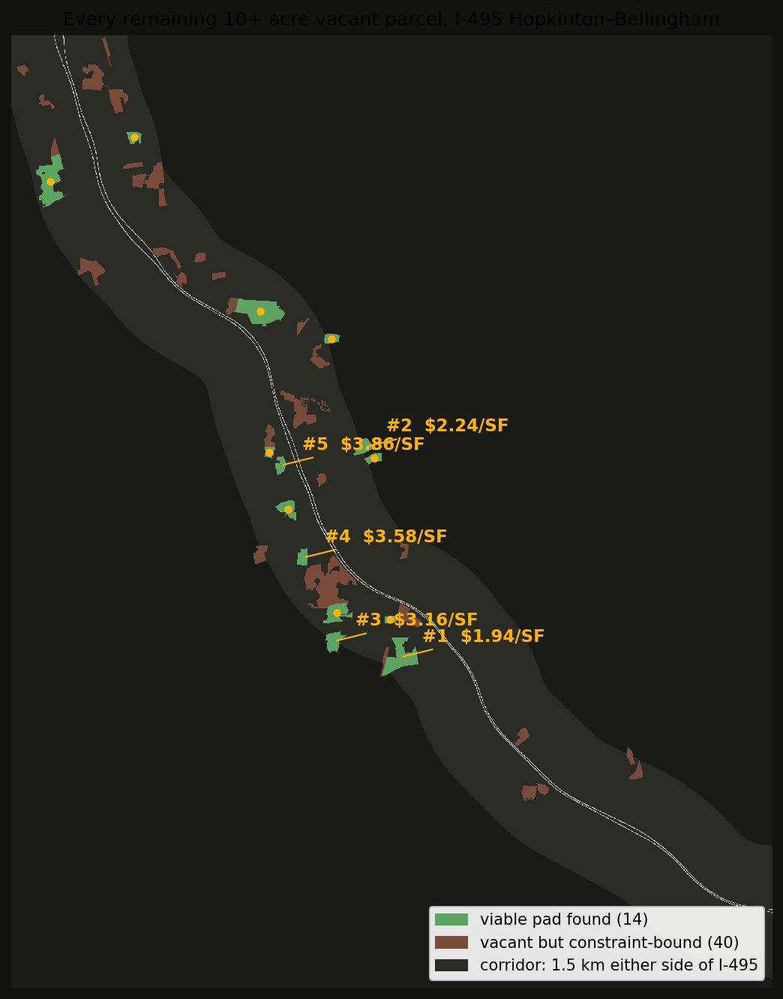

Projects 01–03 each studied one site in depth. This one asks the question that comes first: which sites are even worth studying? I took a 20 km stretch of the I-495 belt, Hopkinton down through Bellingham, pulled every tax parcel within 1.5 km of the highway across nine towns, and ran the same terrain screens on everything vacant and 10+ acres. The shortlist turns out to be short.

If you're looking at wooded land in Massachusetts, this is the kind of homework you can do before an offer — happy to walk through any of it. mhowe.gis@gmail.com
Green parcels passed the screen — a contiguous pad (16.3 or 7.4 acres) fits with at least 70% of it clear of wetlands, stream setbacks and steep ground. Brown parcels are vacant but couldn't fit one. The extension south changed the picture: the rolling Hopkinton end is where dirt costs the most, and the flatter Bellingham–Franklin end is where the affordable pads hide — the top five are all south of Milford.

Each parcel got the same treatment: find the best possible pad position inside it (two pad sizes tried), grade it to balance, price the dirt at $20/yd³. "Constrained" is the share of the parcel inside wetland buffers, stream setbacks, or slopes over 15%.
| # | Parcel | Town | Acres | Constrained | Best pad | Sitework $/SF |
|---|---|---|---|---|---|---|
| 1 | 0 West Central St | Franklin | 87.1 | 59% | 7.4 ac pad · 31,047 yd³ ≈ $0.62M | $1.94 |
| 2 | 23 R Tulip Way | Medway | 24.7 | 46% | 7.4 ac pad · 35,803 yd³ ≈ $0.72M | $2.24 |
| 3 | 0 High St | Bellingham | 33.7 | 61% | 7.4 ac pad · 50,468 yd³ ≈ $1.01M | $3.16 |
| 4 | 0 Hartford Av | Bellingham | 20.8 | 53% | 7.4 ac pad · 57,217 yd³ ≈ $1.14M | $3.58 |
| 5 | 4 Technology Dr | Milford | 18.5 | 26% | 7.4 ac pad · 61,756 yd³ ≈ $1.24M | $3.86 |
| 6 | 0 High St | Bellingham | 47.8 | 29% | 16.3 ac pad · 144,167 yd³ ≈ $2.88M | $4.06 |
| 7 | 0 Hixon St | Bellingham | 32.1 | 39% | 7.4 ac pad · 67,733 yd³ ≈ $1.35M | $4.24 |
| 8 | Maple St | Milford | 12.5 | 22% | 7.4 ac pad · 81,825 yd³ ≈ $1.64M | $5.12 |
| 9 | East Main St | Milford | 119.2 | 76% | 7.4 ac pad · 93,991 yd³ ≈ $1.88M | $5.88 |
| 10 | 0 Pine Island Road | Hopkinton | 110.2 | 45% | 16.3 ac pad · 233,019 yd³ ≈ $4.66M | $6.56 |
| 11 | 0 Farm St | Bellingham | 16.3 | 8% | 7.4 ac pad · 110,234 yd³ ≈ $2.20M | $6.90 |
| 12 | 0 Lumber Street | Hopkinton | 16.5 | 32% | 7.4 ac pad · 129,444 yd³ ≈ $2.59M | $8.10 |
| 13 | 306 Maple St | Bellingham | 11.5 | 24% | 7.4 ac pad · 141,798 yd³ ≈ $2.84M | $8.87 |
| 14 | Parcel M_202617_878687 | Holliston | 17.3 | 47% | 7.4 ac pad · 175,079 yd³ ≈ $3.50M | $10.95 |
| · | Off Lumber Street | Hopkinton | 11.7 | 50% | no contiguous pad fits the screens | — |
| · | 0 Lumber Street | Hopkinton | 20.4 | 76% | no contiguous pad fits the screens | — |
| · | 253 Lumber Street | Hopkinton | 14.3 | 71% | no contiguous pad fits the screens | — |
| · | 0 Granite Street | Hopkinton | 29.3 | 71% | no contiguous pad fits the screens | — |
| · | Parcel M_201898_878945 | Holliston | 10.4 | 38% | no contiguous pad fits the screens | — |
| · | Rear Purchase St | Milford | 12.6 | 86% | no contiguous pad fits the screens | — |
| · | Silver Hill Rd | Milford | 34.6 | 85% | no contiguous pad fits the screens | — |
| · | Rear Haven St | Milford | 15.3 | 44% | no contiguous pad fits the screens | — |
| · | 400 Deer St | Milford | 25.0 | 57% | no contiguous pad fits the screens | — |
| · | 10 Country Way | Hopkinton | 10.4 | 52% | no contiguous pad fits the screens | — |
| · | 80 Deer St | Milford | 13.3 | 99% | no contiguous pad fits the screens | — |
| · | Rear Cedar St | Milford | 11.5 | 84% | no contiguous pad fits the screens | — |
| · | Rear Cedar St | Milford | 10.4 | 24% | no contiguous pad fits the screens | — |
| · | I 495 | Milford | 18.5 | 100% | no contiguous pad fits the screens | — |
| · | Maple St | Milford | 24.0 | 74% | no contiguous pad fits the screens | — |
| · | Off Medway Rd | Milford | 12.3 | 100% | no contiguous pad fits the screens | — |
| · | 0 Hartford Av | Bellingham | 24.1 | 64% | no contiguous pad fits the screens | — |
| · | Downey Street | Hopkinton | 11.9 | 27% | no contiguous pad fits the screens | — |
| · | 0 Hartford Av | Bellingham | 44.5 | 72% | no contiguous pad fits the screens | — |
| · | 187 Farm St | Bellingham | 11.9 | 95% | no contiguous pad fits the screens | — |
| · | 0 North Main St | Bellingham | 31.6 | 90% | no contiguous pad fits the screens | — |
| · | 0 Maple St | Bellingham | 106.1 | 69% | no contiguous pad fits the screens | — |
| · | 0 Maple St | Bellingham | 10.2 | 35% | no contiguous pad fits the screens | — |
| · | 0 Oak St | Bellingham | 12.1 | 46% | no contiguous pad fits the screens | — |
| · | 36 R Alder St | Medway | 35.6 | 100% | no contiguous pad fits the screens | — |
| · | 0 Oak Grove | Medway | 13.0 | 44% | no contiguous pad fits the screens | — |
| · | 26 Alder St | Medway | 11.3 | 82% | no contiguous pad fits the screens | — |
| · | 0 R Stone End Rd | Medway | 25.3 | 84% | no contiguous pad fits the screens | — |
| · | 0 Mine Brook | Franklin | 15.0 | 51% | no contiguous pad fits the screens | — |
| · | 0 Mine Brook | Franklin | 23.0 | 64% | no contiguous pad fits the screens | — |
| · | 0 Old Town Road | Hopkinton | 13.2 | 61% | no contiguous pad fits the screens | — |
| · | 300 Fisher St | Franklin | 18.3 | 82% | no contiguous pad fits the screens | — |
| · | 0 King St | Franklin | 24.4 | 51% | no contiguous pad fits the screens | — |
| · | 555 King St | Franklin | 12.6 | 55% | no contiguous pad fits the screens | — |
| · | 0 Summer St | Franklin | 10.4 | 33% | no contiguous pad fits the screens | — |
| · | 0 Uncas Pond | Franklin | 15.6 | 14% | no contiguous pad fits the screens | — |
| · | 0 Lumber Street | Hopkinton | 27.8 | 74% | no contiguous pad fits the screens | — |
| · | 0 Lumber Street | Hopkinton | 27.5 | 73% | no contiguous pad fits the screens | — |
| · | 0 West Main Street | Hopkinton | 10.1 | 62% | no contiguous pad fits the screens | — |
| · | Off Teresa Road | Hopkinton | 40.3 | 81% | no contiguous pad fits the screens | — |
A few things stand out. The 87-acre Franklin parcel at $1.94/SF is a quarter the dirt cost of anything in Hopkinton. Only two parcels in 20 km can take the full 16.3-acre warehouse pad — 48 acres on High Street in Bellingham ($4.06/SF) and Pine Island Road in Hopkinton ($6.56/SF); everything else maxes out at the 7.4-acre size. And the forty brown rows aren't worthless — they're just not warehouse sites; several might take a smaller building or stay as mitigation land.
Screening-level, from public data. A shortlist this small means the full study is affordable for every parcel on it. Also run per project: terrain-wetness discrepancy, vernal-pool candidates, surface roughness. Scripts and pipeline files available on request.